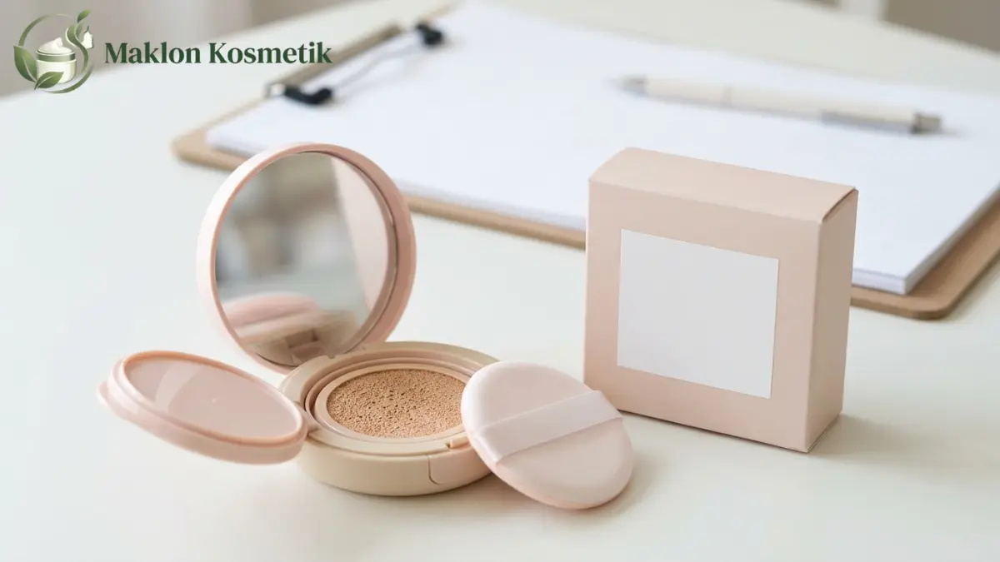

Aturan BPOM Mengenai Klaim Mencerahkan pada Body Lotion dan Cushion

Daftar Isi Artikel Buka/Tutup
- Apa yang Dimaksud Klaim Mencerahkan pada Kosmetik?
- Apakah Notifikasi BPOM Wajib untuk Body Lotion dan Cushion?
- Klaim Apa Saja yang Umumnya Boleh Digunakan?
- Klaim dan Bahan Apa yang Dilarang BPOM?
- Apa Perbedaan Aturan Klaim pada Body Lotion dan Cushion?
- Bagaimana Cara Menyusun Klaim yang Aman Bersama Pabrik Maklon?
- Apa Risiko jika Klaim Produk Melanggar Aturan?
- Pertanyaan Umum (FAQ)
Ringkasan Poin Inti
- Klaim mencerahkan pada kosmetik harus bersifat perawatan permukaan kulit, bukan perubahan struktur biologis permanen.
- Seluruh sediaan body lotion dan cushion wajib mengantongi izin edar notifikasi BPOM sebelum dipasarkan.
- Badan POM melarang keras penggunaan merkuri dan hidrokuinon dalam formula kosmetik pencerah.
- Klaim yang memuat data kuantitatif wajib didukung oleh hasil uji klinis efikasi laboratorium terakreditasi.
- Pemilik merek memikul tanggung jawab hukum penuh atas kesesuaian klaim pada label botol dan materi iklan promosi.
Apa yang Dimaksud Klaim Mencerahkan pada Kosmetik?
Klaim mencerahkan adalah pernyataan bahwa produk membantu tampilan kulit tampak lebih bercahaya, bersih, dan warna kulit lebih merata melalui perawatan lapisan epidermis luar.
Regulator membedakan secara tegas produk kosmetik dari obat farmasi. Kosmetik berfungsi membersihkan dan mempercantik penampilan tanpa mengubah fungsi fisiologis organ tubuh.
Oleh karena itu, klaim yang menjanjikan pengubahan warna kulit secara permanen dianggap melampaui definisi kosmetik dan dilarang dicantumkan pada kemasan.
Apakah Notifikasi BPOM Wajib untuk Body Lotion dan Cushion?
Setiap botol body lotion dan case cushion foundation wajib memiliki nomor notifikasi resmi dari Badan POM yang berlaku selama masa edar 3 tahun.
Pabrik maklon akan membantu melampirkan lembar formula dan sertifikat analisis (CoA), namun pemilik brand wajib memvalidasi bahwa kalimat etiket label sesuai dengan draf pendaftaran.
Klaim Apa Saja yang Umumnya Boleh Digunakan?
Badan POM memperbolehkan narasi kosmetik yang santun dan realistis yang didukung oleh kandungan bahan aktif yang terbukti aman:
- 'Membantu menjaga kelembapan kulit dan membuatnya tampak lebih cerah alami.'
- 'Membantu meratakan tampilan warna kulit yang kusam akibat paparan sinar matahari.'
- 'Memberikan coverage halus untuk kulit tampak cerah seketika' (spesifik untuk sediaan cushion).
Bila Anda ingin mencantumkan klaim persentase, seperti '90% konsumen merasa kulit lebih cerah', Anda wajib memiliki laporan uji persepsi konsumen atau uji klinis independen.
Klaim dan Bahan Apa yang Dilarang BPOM?
Bahan kimia berbahaya seperti merkuri dilarang tanpa toleransi, dengan ambang batas cemaran maksimal tidak boleh melampaui 1 mg/kg (1 ppm).
Hidrokuinon dan asam retinoat diklasifikasikan sebagai obat keras resep dokter yang haram dicampurkan ke dalam formula kosmetik maklon.
Hindari pula frasa berlebihan seperti 'memutihkan dalam 3 hari', 'menghilangkan flek hitam menahun', atau 'dijamin bebas jerawat selamanya'.

Apa Perbedaan Aturan Klaim pada Body Lotion dan Cushion?
Body lotion digunakan pada area permukaan tubuh yang luas secara terus-menerus, sehingga penekanan regulasi difokuskan pada uji keamanan bahan pelembap jangka panjang.
Sementara pada cushion foundation, efek mencerahkan didominasi oleh partikel pigmen warna penutup noda dan pantulan sinar fisik.
Jika cushion menyertakan perlindungan tabir surya (SPF), angka SPF tersebut wajib dibuktikan lewat uji in vitro atau in vivo sebelum dicetak pada kemasan boks.
"Klaim produk kosmetik yang bertanggung jawab tidak hanya menjaga brand dari teguran hukum BPOM, tetapi juga membangun kepercayaan jangka panjang pelanggan."
Bagaimana Cara Menyusun Klaim yang Aman Bersama Pabrik Maklon?
Mintalah dokumen data teknis (raw material dossier) dari tim formulator pabrik mengenai konsentrasi niacinamide, alpha arbutin, atau ekstrak botanikal yang digunakan.
Gunakan kata kerja bantu seperti 'membantu' atau 'merawat', dan pastikan redaksi teks yang tertulis pada botol identik dengan copywriting iklan media sosial Anda.
Apa Risiko jika Klaim Produk Melanggar Aturan?
Pelanggaran klaim penandaan dapat mengakibatkan pembatalan izin edar, pemusnahan stok barang, pemblokiran akun di e-commerce, hingga ancaman sanksi pidana perlindungan konsumen.
Konsultasikan Formula & Klaim Aman Produk Anda
Tim regulasi Maklon Kosmetik ID memastikan seluruh narasi klaim produk body lotion dan cushion Anda terdaftar legal dan lolos audit Badan POM.
Pertanyaan Umum (FAQ)

Meilita
Konsultan Formulasi & Pengembangan Produk di Maklon Kosmetik ID. Membantu brand independen merancang formula perawatan pria dan kosmetik terstandarisasi BPOM.